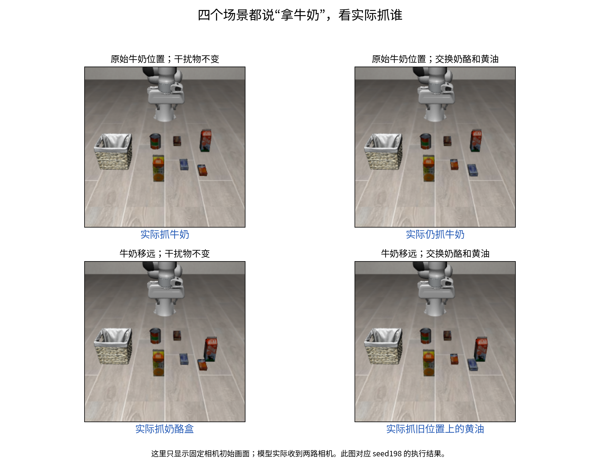

新增：π 与 Cosmos 的隐层改造实验
官方结构图、选层证据、操作方法和抓取结果。π 的在线指令差分在当前场景：原模型 0/3，倍率 2 和 3 均为 3/3；尚未验证泛化。
从画面和指令，到机械臂动作
看完整网络结构图 → 我们只研究中间这段。网络里有一份代表“即将生成的动作”的向量，每一层都从画面和文字里读取信息、更新自己，最后被转换成机械臂命令。
进去了：只换一个词，动作向量逐层分开
所以“语言完全没进网络”这个解释可以排除。但要注意：向量变了，不代表选对了物体，机械臂仍可能走向同一个东西；这个百分比也不是“听懂了多少”的分数。
四个场景都说“拿牛奶”：它跟着位置走

牛奶移远后，机械臂改抓奶酪盒。再把奶酪盒和黄油互换位置，它没有追着奶酪盒走，而是抓了奶酪盒原来位置上的黄油。这说明决定抓谁的，更多是“那个位置”，而不是指令里的名字。
它并非完全不听话：另一个场景里，同一画面说“碗”就抓碗，说“酒瓶”就抓酒瓶。问题出在某些布局下，位置信息压过了语言。
哪一处内部信息真正决定了抓谁？
| 替换了什么 | 内部向量 | 实际抓取 |
|---|---|---|
| 第12层的动作向量，来源是一次抓对牛奶的计算 | 改变 | 不变 仍抓奶酪盒 |
| 第30层的动作向量，来源同上 | 改变 | 带偏 改抓黄油（来源场景里牛奶原来的位置），仍没抓牛奶 |
| 第36层互换“牛奶盒”和“奶酪盒”的文字信息（只在首轮预测），并固定 MLP 响应 | 改变 | 不变 各自仍抓原目标 |
这相当于问：这一处内部信息只是“发生了变化”，还是“实际决定了抓哪个物体”？到目前为止，换文字的实验答案都是前者；换动作向量只能把目标带偏，且带偏的更像是位置，而不是语言。
Cosmos 团队的回复：这是常见问题，不只出现在这个模型
在任务专项微调后，开源 VLA/WAM 策略普遍对语言不敏感。我们在 Cosmos3、π0.5、LingBot-VA 的 LIBERO 微调权重上观察到了类似现象。……这与“策略更依赖熟悉的视觉场景而非语言指令”的更广泛问题一致。
| 模型 | “张开／闭合”指令互换后，夹爪方向不变 |
|---|---|
| Cosmos3 | 180 / 180 |
| π0.5 | 180 / 180 |
| LingBot-VA | 180 / 180 |
他们提到的缓解方向是 CAG、CAST 和 CounterAlign，都还没有在这个权重上验证过。查看讨论 #369
语言产生的变化，为什么推不动目标选择？
我们已经排除了“语言完全没进去”。下一步要检查：目标是不是在更早的层就已经被画面和位置定下来了，以致后面的语言信息改不动它。